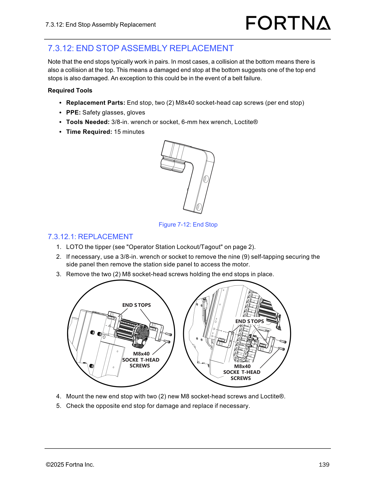

| Procedure ID | proc_quick_replacement_z_axis_cable_carrier_v1 |
|---|---|
| Title | Quick Replacement of Z-Axis Cable Carrier (Snap Apart/Ends Snap-In) |
| Procedure Type | recovery |
| Primary Role | operator |
| Support Safe | Yes |
| Capability Tags | agv_physical_recovery |
| Access Surface | physical_floor |
| Audience Roles | operator |
| Failure Pattern Tags | None |
| Validation Status | needs_sme_review |
| Merge Status | source_finalized |
Performs a quick Z-axis cable carrier replacement by LOTO the tipper, snapping the carrier apart at both ends, removing the old carrier, installing the new carrier, snapping cross bars closed, and snapping both ends into the end pieces that remain mounted.
Use when both ends of the existing Z-axis cable carrier are in good condition and you need a quick replacement by snapping the carrier apart at both ends, leaving the end pieces mounted on the tipper.

Responsible role: operator
Instruction:
Perform LOTO on the tipper using the manual’s referenced “Operator Station Lockout/Tagout” location.
Expected result:
The tipper is in a locked-out/tagged-out state prior to side panel removal or carrier disassembly.
Stop or Escalate If:
Responsible role: operator
Instruction:
If necessary, use a 3/8-in. wrench or socket to remove the nine (9) self-tapping securing screws for the station side panel, then remove the station side panel to access the motor.
Expected result:
The station side panel is removed and the motor access area is available.
Stop or Escalate If:
Responsible role: operator
Instruction:
Disassemble or “snap apart” the cable carrier at both ends, leaving only the end pieces attached to the tipper.
Expected result:
The old cable carrier is separated at both ends, with only the end pieces remaining attached to the tipper.
Stop or Escalate If:
Responsible role: operator
Instruction:
“Snap” the ends off the new cable carrier and open all the cross bars on the outside of the new cable carrier.
Expected result:
The new carrier’s ends are snapped off, and all outside cross bars are open.
Stop or Escalate If:
Responsible role: operator
Instruction:
Open all the cross bars on the outside of the old cable carrier and remove it from the system.
Expected result:
The old cable carrier is removed from the system.
Responsible role: operator
Instruction:
Put the new cable carrier roughly in place while positioning the internal dividers all the way to one side, against the air line.
Expected result:
New carrier is positioned roughly in place and internal dividers are all the way to one side against the air line.
Stop or Escalate If:
Responsible role: operator
Instruction:
“Snap” all the cross bars closed.
Expected result:
All outside cross bars on the new carrier are snapped closed.
Stop or Escalate If:
Responsible role: operator
Instruction:
“Snap” both ends into the end pieces that are still mounted.
Expected result:
Both ends of the new carrier are snapped into the end pieces that remain mounted on the tipper.
Stop or Escalate If: